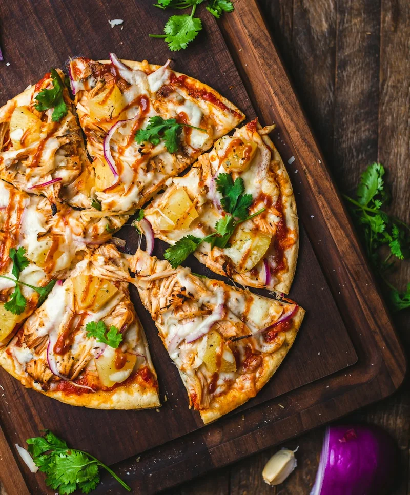

Structural explorations
A retrospective comparison of four design decisions. Each section shows the earlier approach, the current choice and a question for future testing. All menu content is sample data.
AFeed information density
The original feed showed photos without labels. Comparing names and prices meant opening each dish.
A1 · Photo-only v3.1 choice



- Scan: few visual elements; scanning speed untested
- Decisions: name, price and distance need a tap each
- A11y: weakest; image-only targets
- Review: two dishes cannot be compared without opening both
A2 · Minimal overlay
- Scan: small labels over the photos; scanning speed untested
- Decisions: price in-feed, but no name; long names clip in a glass pill
- A11y: text on photos needs contrast testing
A3 · Text beneath v3.2 choice
- Scan: more information to read; scanning speed untested
- Decisions: complete; names wrap instead of clipping
- A11y: descriptive button names; a separate Save control
- Without a photo: the card still works
A4 · Reveal on hold
$17 · 1.2 mi
- Scan: clean until invoked
- Decisions: gated behind an undiscoverable gesture
- A11y: requires an alternative to long-press and a visible cue
A3 in every grid. I added text below the photos so names, prices and distances stay visible. The larger cards show fewer dishes at once; the featured image still gives the food room. To test: can people compare options without opening each one?
BEntry model
What stands between a first-time visitor and food, and where do dietary settings go?
B1 · Calibrate first, skippable v3.1 choice
- Two screens before food; skip mitigates
- Asked for a device location it could not use
- Taste taps looked mandatory even when they weren't
B2 · Browse first
- Zero friction
- Inference is opaque; hard to trust or correct
- An allergic diner browses with no way to say so until later
B3 · Area, then optional dietary step v3.2 choice
- Dietary settings offered before food, not forced
- Nothing pretends to know the device location
- Taste is a boost you can add, not a gate
B3. Dietary settings are offered before browsing and can be skipped. Taste preferences moved to Profile, where they can be added later. The welcome screen names the demo area instead of asking for device location. To test: can people start browsing and find these settings when they need them?
CEvidence on the dish page
v3.1 asked how a repeat-order percentage should present to be believed. The review asked a prior question: can the prototype produce that number at all?
C1 · Percentage alone
- Unanchored: 94% of what?
- Reads like marketing
C2 · % + sample + method v3.1 choice
- Clearer wording, but still no real order data
- Needs order attribution, consent, a follow-up window and item identity across menu changes; none exist
C4 · Cold start v3.1 choice
- Admitting "not enough data" was right
- There was no order data for any of the dishes
C5 · Facts with a source and a date v3.2 choice
- Sample prices and dates show where source details would appear
- The repeat-order percentage is removed
- The description is labeled as an edited menu description, not a review
C5. I removed the repeat-order score because the prototype has no order records. The detail page now uses sample prices, menu listings and ingredient information to demonstrate the layout. To test: do people understand the limits of that information and know what to check with the restaurant?
DThe action
Dish detail ends in one primary action. What is it, and what does it promise?
D1 · Order primary v3.1 choice
- Matched "decide with your eyes → act now"
- Promised fees, ETAs and pickup timing the prototype invented
- Directions were a toast; three actions competed
D2 · Directions primary
- Honors walking there
- Still two exits competing; still a simulated map
D3 · Context-dependent
- One primary action based on availability
- Depended on hours and carrier data the catalog does not have
D4 · Next step, named for its destination v3.2 choice
- Label chosen from the destination model per restaurant
- The sheet says where it lands and what may have changed
- A listed conflict offers other dishes and the restaurant menu
D4. The button describes the destination: a dish page, restaurant menu or contact details. A confirmation makes clear that the demo has not placed an order. To test: can people predict what the button will do before they press it?
| Method note | All comparisons are rendered in the Toast visual system so differences are structural, not cosmetic. "Review · v3.2" marks a change made from a design review of the v3.1 build in September 2026, not from participant evidence. Recommendations stay provisional until the research plan runs. |